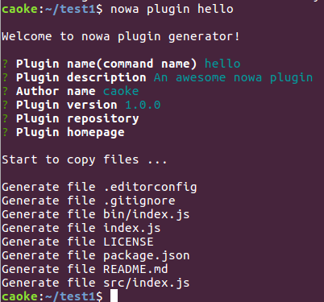

插件
查找
可以从 npm 上搜索到可用的 nowa 插件，访问这里。
安装
可通过以下命令安装 nowa 插件：
nowa install <plugin>
新建
如果还是没有找到你想要的插件，则可以通过 nowa 内置的插件脚手架功能来创建一个新的插件！
nowa plugin <name>

代码入口在 src/index.js，主要部分如下：
// plugin defination
module.exports = {
description: pkg.description,
options: [
// [ '-p, --port [port]', 'which port to use', 80 ],
// [ '-s, --slient', 'slient?', false ]
],
action: function(options) {
// console.log(options.mode, options.slient)
console.log('It works.')
}
};
options 定义了可用的参数，action 则定义了具体操作，就是这么简单。
测试
把插件链接到全局目录就可以开始测试啦！
npm link
nowa <name>